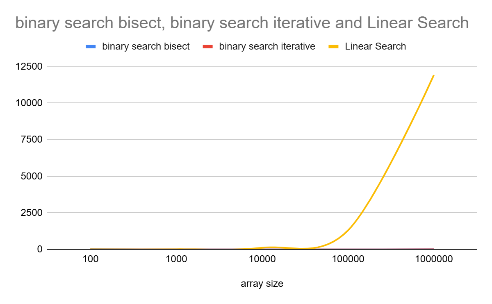
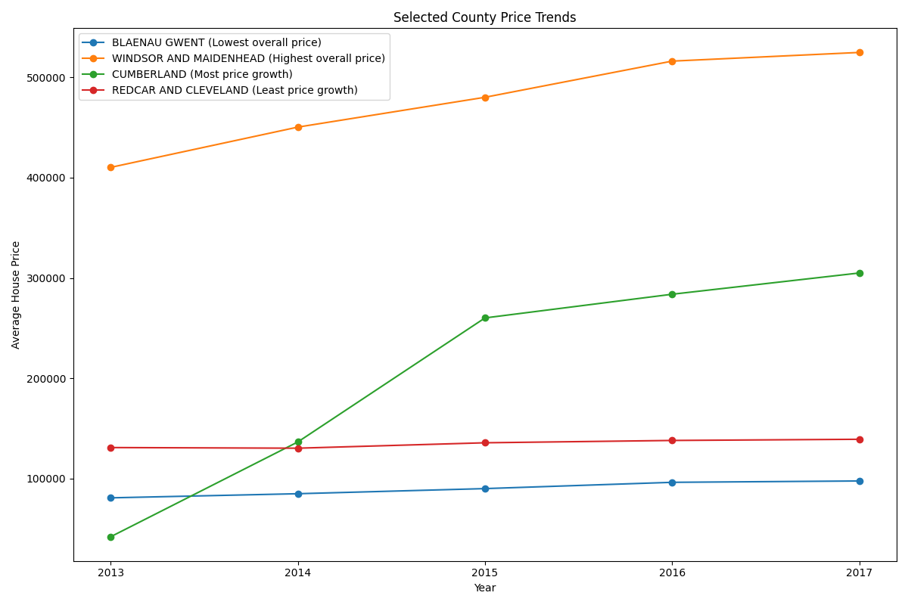
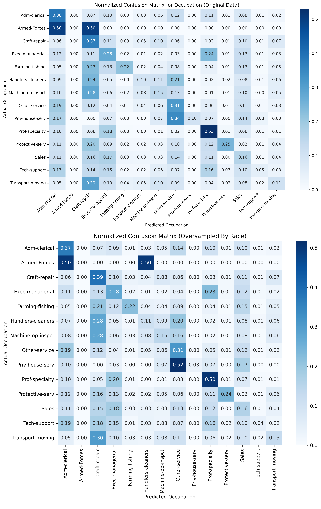
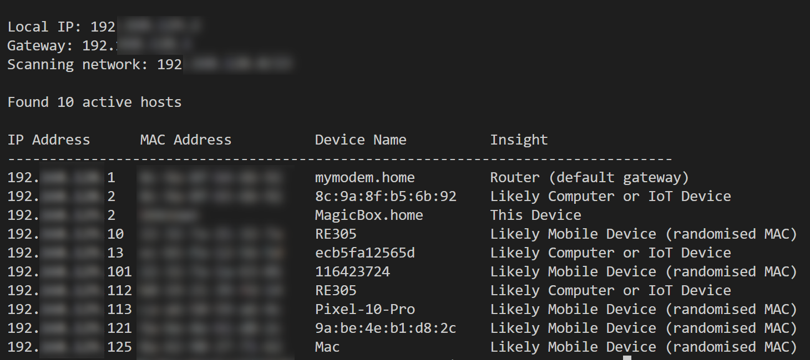

This page documents the coursework submitted for Module 1: Launch Into Computing.

Algorithm Analysis and Implementation - Unit 3
What I did:
- Compared linear and binary search by analysing their Big-O time complexities.
- Tested both algorithms (including two binary search implementations) on increasingly large datasets.
- Measured and plotted execution times to evaluate performance.
Key findings:
- Linear search has a time complexity of O(n), while binary search is O(log n), making binary search more efficient for large datasets.
- Binary search requires sorted data; sorting (e.g., quick sort at O(n log n)) adds overhead.
- For a single search on unsorted data, linear search can be faster.
- For multiple searches, sorting once and using binary search repeatedly is more efficient overall.
- Performance differences between binary search implementations were minimal compared to the gap between binary and linear search.
What I learned:
- Algorithm efficiency depends on context, not just theoretical complexity.
- Pre-processing costs (like sorting) must be considered when choosing an approach.
- Binary search is more scalable for repeated operations on large datasets.
- Practical testing is essential to validate theoretical expectations.

Data Analytics with Python and Data Storage Reflection
What I did:
- Analysed UK Government Price Paid Data (2013–2017) using Python.
- Worked with a structured CSV dataset stored locally (~4.9 million rows, 16 columns).
- Used AI-generated code to assist with data processing and analysis.
- Cleaned and analysed the dataset to identify patterns.
Key findings:
- Even moderately sized datasets can experience performance lag, highlighting the importance of data structure optimisation.
- Initial data cleaning produced inaccurate results due to duplicate property identification.
- Properties (e.g., flats) were incorrectly grouped because full address data was not considered.
- AI-generated solutions can introduce errors if not carefully validated.
What I learned:
- Data quality and correct identifiers are critical for accurate analysis.
- Human verification is essential when using AI-generated code.
- Data structure and storage format impact performance and usability.
- SQL would likely be efficient for structured, consistent datasets, while NoSQL may suit larger, more complex, or real-time data scenarios.
- Future improvements could include comparing CSV, SQL, and NoSQL performance and data handling.

Implementing and Evaluating a Simple AI Model - Unit 6
What I did:
- Analysed three datasets: Car Evaluation, Adult Income, and UK Census 2021.
- Used AI (ChatGPT) as a coding agent to build and test machine learning models.
- Attempted to deliberately introduce bias and tested oversampling as a mitigation technique.
- Processed and restructured data, including converting complex datasets into NoSQL-style formats.
Key findings:
- The UK Census dataset highlighted issues with inconsistent structure and duplicate data, requiring manual verification.
- The Car Evaluation dataset showed a small improvement in prediction accuracy when oversampling was applied (from ~0.974 to ~0.994).
- The dataset size limited the reliability of conclusions about oversampling effectiveness.
- The Adult Income dataset demonstrated clear bias, particularly in predicting race and occupation.
- Oversampling did not remove bias, as the model still favoured predicting certain groups (e.g., white ethnicity).
- Visual outputs such as confusion matrices showed uneven prediction accuracy across classes, reinforcing evidence of bias.
What I learned:
- Bias in AI models often originates from the training data and cannot be fully corrected through simple techniques like oversampling.
- Ethical considerations are important, and even AI tools can recognise and warn about biased practices.
- Data quality, structure, and consistency significantly impact model performance and reliability.
- Human validation is essential to detect issues such as duplicates and incorrect assumptions in the data.
- More advanced techniques, such as adversarial debiasing, may be required to address bias effectively.

Cybersecurity Threat Assessment and Mitigation Plan - Unit 8
What I did:
- Simulated an ARP Man-in-the-Middle (MitM) attack using a virtual environment (Ubuntu victim and Kali attacker).
- Created a Python script to scan networks and retrieve IP addresses and device information.
- Tested vulnerabilities on both private and public Wi-Fi networks.
- Used Wireshark to monitor and analyse intercepted network traffic.
- Evaluated different mitigation strategies, including HTTPS, firewalls, VPNs, and detection systems.
Key findings:
- Network scanning revealed that private networks expose more identifiable device information than public networks (pages 1–2).
- The MitM simulation showed that attackers can intercept traffic and view domain-level activity in real time.
- HTTPS encryption prevents attackers from accessing sensitive data such as login credentials, even if traffic is intercepted.
- Oversimplified claims that MitM attacks cannot be mitigated are inaccurate; multiple defensive measures can reduce risk.
- VPNs improve security but introduce trade-offs such as reduced performance and potential vulnerabilities.
- Detection tools exist but may be less effective on public Wi-Fi networks.
- Human behaviour (e.g., disabling security tools or connecting to unsafe networks) remains a major vulnerability.
What I learned:
- MitM attacks are difficult to detect but can be partially mitigated through layered security approaches.
- Encryption (HTTPS/TLS) is critical in protecting sensitive data during network attacks.
- No single solution is sufficient; a combination of tools (firewalls, VPNs, detection systems) is required.
- Security measures are only effective if users follow best practices, highlighting the importance of user awareness and training.
- More advanced or alternative attack types (e.g., adversary-in-the-middle or browser-based attacks) require additional strategies.